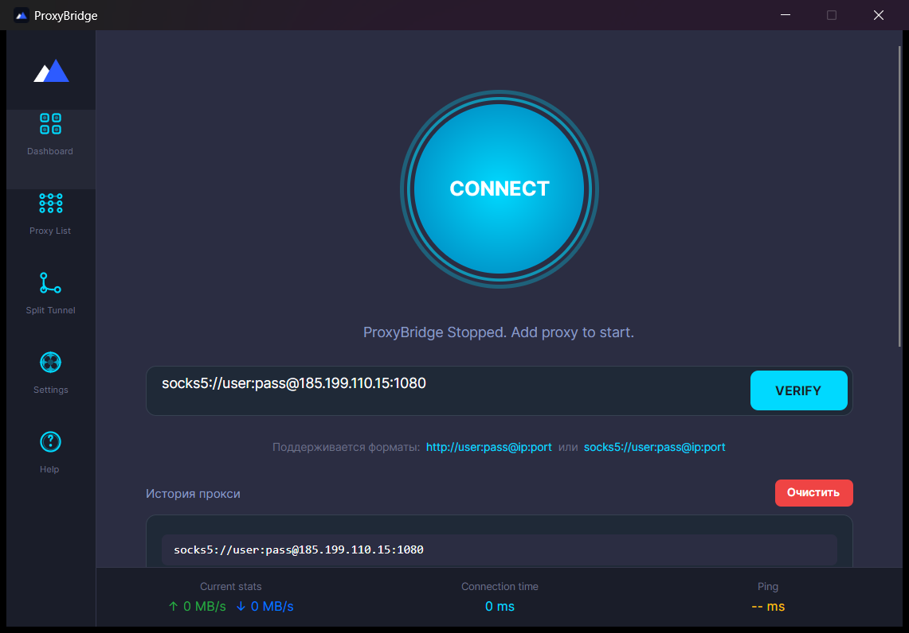
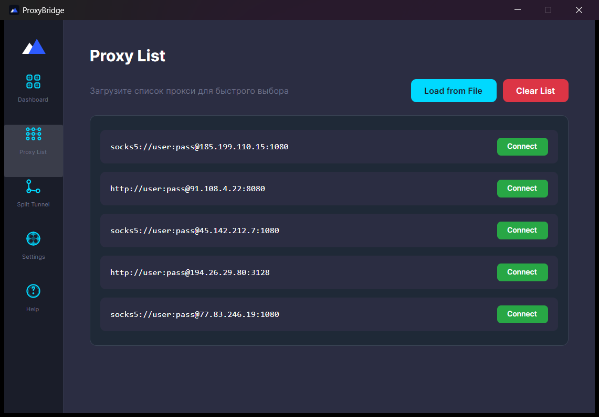
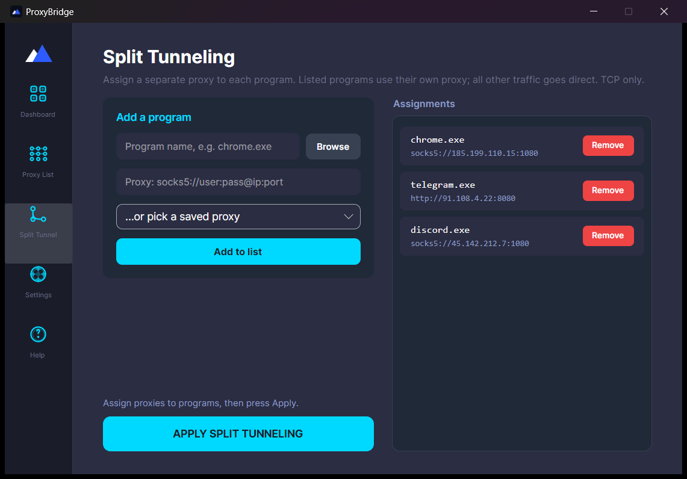
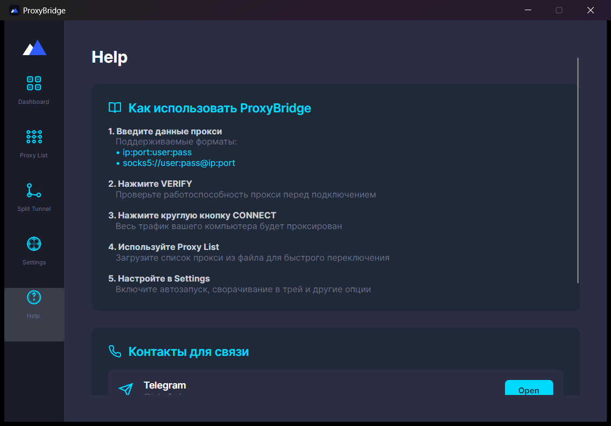

Соединение по
твоим правилам.
Вся система или отдельные приложения.
Один клиент для твоих прокси.

Поддерживаются форматы: http://user:pass@ip:port или socks5://user:pass@ip:port
Proxy List
Загрузи список прокси для быстрого выбора
Split Tunneling
Каждой программе свой прокси. Остальной трафик идёт напрямую. Только TCP.
Add a program
Assignments
Settings
Поведение программы
Help
Коротко о том, как пользоваться
Как использовать ProxyBridge
- Введи данные проксиhttp://user:pass@ip:port или socks5://user:pass@ip:port
- Нажми VERIFYПроверка доступности и страны прокси
- Нажми круглую кнопку CONNECTВесь TCP-трафик пойдёт через прокси
- Используй Proxy ListЗагрузи список из файла и переключайся одной кнопкой
- Настрой Split TunnelОтдельный прокси для каждой программы
Контакты
- Telegram: @inter1ark
- Email: support@proxybridge.org
Один клиент.
Разные маршруты.
Подключи всю систему или назначь отдельный прокси каждой программе.
APP
Проверка GEO
Страна, город и доступность прокси до подключения. Флаг страны прямо в окне.
История и импорт
Последние прокси сохраняются сами. Списки загружаются из файла и переключаются одной кнопкой.
Автоподключение
Запуск вместе с Windows, работа из трея и подключение к последнему прокси без твоего участия.
Внутри программы.
Настоящие скриншоты ProxyBridge 3.2. Шесть экранов, ничего лишнего.






- Вставь адрес прокси.
- Проверь через
VERIFY. - Нажми
CONNECT.
Для работы нужен собственный прокси-сервер. ProxyBridge его не предоставляет. На время работы выключи VPN-клиенты (WireGuard, Amnezia и подобные): два перехватчика трафика одновременно конфликтуют.
Подписка.
Один ключ, до двух устройств. Ключ приходит сразу после оплаты, активация в окне программы при запуске.
- Все функции программы
- До 2 устройств на ключ
- Обновления и поддержка
- Все функции программы
- До 2 устройств на ключ
- Обновления и поддержка
- Все функции программы
- До 2 устройств на ключ
- Обновления и поддержка
Ключ появляется на странице после оплаты и дублируется на email. Вопросы по оплате: support@proxybridge.org.
Оплачивая, ты принимаешь публичную оферту, политику конфиденциальности и условия возврата.
Нужна помощь?
Свяжись удобным способом

На связи.
Windows 10/11, 64-bit · Установка от имени администратора
macOS 12+ (бета): Apple Silicon · Intel
Приложение не подписано Apple: при первом запуске открой его через правый клик и «Открыть». Понадобится пароль администратора. Только системный режим, без Split Tunnel.